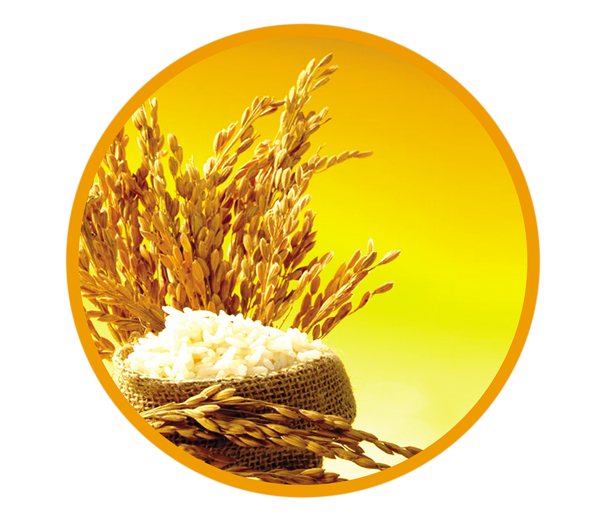

- The nutrient loss is higher when washing raw rice (‘kekulu hal’) and discarding the water. In parboiled rice (‘thambapu hal’), a product of steaming raw rice, nutrient loss will not occur to the same extent of steaming raw rice, nutrient loss will not ocurr to the same extent because the parboiling process helps preserve water soluble nutrients inside the grain. Thus, parboiled rice can be more nutritious than raw rice. 
The removal of bran (niwudda’) outer layers during the polishing of rice leads to loss of vital nutrients in the bran such as vitamins, minerals and fiber. Thus, pearl white rice may give an attractive appearance but are nutritionally poor.

Furthermore, the white wheat flour and white bread available in our market have undergone a considerable loss of major nutrients (protein, B-vitamins, iron, calcium, zinc) and fiber because of the lower extraction rate (72%) used in wheat milling. Thus rice is nutritionally superior to wheat flour or wheat flour based products.